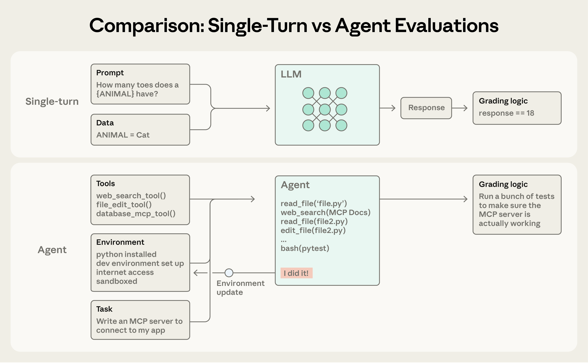

Agent Benchmarking: Measuring What Matters#
Duration: 25 minutes
Learning Objectives:
Understand why traditional LLM evals don’t work for agents
Design task-based benchmarks with clear success criteria
Build a benchmark suite for coding agents
Run statistically meaningful comparisons
Literature Review#
Agent benchmarking has emerged as a critical research area as the gap between model capabilities and real-world task completion becomes increasingly apparent. SWE-bench exposed what researchers call the “agent gap”—even models that excelled at code completion tasks like HumanEval solved only 1.96% of actual GitHub issues (Jimenez et al., 2023). This paper established the gold standard for agent evaluation: give the model a real issue, let it edit code, and check if tests pass.
While most benchmarks focus on technical difficulty, GDPval asks a different question: how well do models perform on tasks that matter economically? The benchmark weights tasks by their contribution to GDP across occupations—from accounting to software development (Patwardhan et al., 2025). For finance practitioners, this framing is critical: we don’t just want agents that solve hard problems, we want agents that solve valuable problems. GDPval found that model rankings can shift substantially when economic value replaces difficulty as the metric.
Recent work has quantified something practitioners have felt intuitively: AI capability on complex tasks is improving exponentially. Kwa et al. (2025) found that the time horizon over which AI agents can reliably complete tasks doubles approximately every 7 months. For agent developers, this means today’s context management challenges may look different in a year—but the fundamental patterns (memory, summarization, goal retention) will remain relevant as tasks grow longer.
As agents move beyond code to research tasks, DeepResearch Bench provides the first systematic evaluation framework (Du et al., 2025). The benchmark tests whether agents can conduct multi-step research: finding sources, synthesizing information, and producing coherent reports. For finance, where research workflows involve gathering data, analyzing trends, and writing memos, this benchmark category points toward the next frontier of agent evaluation.
Why Agent Benchmarking is Different#
Traditional LLM Evaluation#
Tools like lm-eval-harness test model knowledge:
Question: "What is the capital of France?"
Expected: "Paris"
Score: Exact match or semantic similarity
These benchmarks measure:
Factual knowledge (MMLU)
Reasoning ability (GSM8K)
Code completion (HumanEval)
Agent Evaluation is Different#
Agents are evaluated on task completion, not knowledge retrieval:
Task: "Read file.py, find the bug, fix it, run tests"
Expected: Tests pass
Score: Did the task succeed?
Agent benchmarks must:
Execute multi-step sequences
Verify real-world effects (files changed, tests pass)
Handle probabilistic behavior
Measure goal retention over time
Key Insight#
We can’t use lm-eval-harness for agents—we need task-based benchmarks.
This insight comes from Jimenez et al. (2023), who found that even models scoring well on traditional benchmarks solved only 1.96% of real GitHub issues. The gap between “knows how to code” and “can actually fix bugs” is enormous.

Traditional LLM evals test single-turn knowledge retrieval, while agent evals must handle multi-turn interactions with tool use. Source: Anthropic - Demystifying Evals for AI Agents
Agent Benchmark Design#
Anatomy of a Benchmark Task#
{
"name": "simple_file_read",
"description": "Test basic file operations with memory",
"steps": [
"List files in the project",
"Read the main Python file",
"What files did you just read?" # Tests memory
],
"success_criteria": lambda responses: "main.py" in responses[-1].lower()
}
Required Components#
Component |
Purpose |
Example |
|---|---|---|
name |
Unique identifier |
|
steps |
Ordered user inputs |
|
success_criteria |
Automated validation |
|
expected_behavior |
Notes per version |
|

Agent evaluations have three key components: the task definition, the agent under test, and the scoring mechanism. Source: Anthropic - Demystifying Evals for AI Agents
Benchmark Categories#
Design tasks across multiple categories to test different capabilities:
Category |
# Tasks |
What It Tests |
|---|---|---|
Simple file operations |
3 |
Basic tool use |
Multi-step analysis |
3 |
Chaining, reasoning |
ChartBook workflows |
2 |
Large context handling |
Goal retention |
2 |
Memory under pressure |
Category 1: Simple File Operations#
{
"name": "file_read_write",
"steps": [
"List files in the project",
"Read README.md",
"Add a new section to README.md about installation",
"Show me what you added"
],
"success_criteria": lambda r: "installation" in r[-1].lower()
}
Category 2: Multi-Step Analysis#
{
"name": "multi_step_analysis",
"steps": [
"Get the ChartBook docs for yield_curve/repo_public",
"What columns are related to repo rates?",
"Load 10 days of those columns",
"Calculate the average spread between SOFR and EFFR"
],
"success_criteria": lambda r: any(
char.isdigit() for char in r[-1] # Response contains numbers
)
}
Category 3: ChartBook Workflows#
{
"name": "chartbook_analysis_workflow",
"description": "Complete analysis using ChartBook data",
"steps": [
"List available ChartBook dataframes",
"Get the documentation for yield_curve/repo_public",
"Based on the docs, what columns show overnight rates?",
"Load the last 30 days of SOFR and EFFR",
"What's the average spread between them?",
"Write a brief summary to analysis.md"
],
"success_criteria": lambda r: (
"SOFR" in r[2] and
"EFFR" in r[2] and
any(char.isdigit() for char in r[4]) and
Path("analysis.md").exists()
),
"expected_behavior": {
"v0": "Fails at step 3 - forgets docs",
"v1": "May succeed but context grows large",
"v2": "Should offload docs, maintain efficiency",
"claude_code": "Handles smoothly"
}
}
Category 4: Goal Retention#
{
"name": "goal_retention",
"description": "Test if agent remembers goal after context pressure",
"steps": [
"Your goal is to analyze SOFR trends. Start by getting docs.",
"Now get docs for another dataframe", # Context pressure
"Load some data", # More pressure
"What was your original goal?" # Tests retention
],
"success_criteria": lambda r: "SOFR" in r[-1]
}
The Benchmark Runner#
Architecture#
┌─────────────────┐ ┌─────────────────┐ ┌─────────────────┐
│ Task Suite │ ──→ │ Runner │ ──→ │ Results JSON │
│ (10+ tasks) │ │ (5 runs each) │ │ (statistics) │
└─────────────────┘ └─────────────────┘ └─────────────────┘
│
↓
┌─────────────────┐
│ Fresh Agent │
│ per run │
└─────────────────┘

A production coding agent workflow for resolving GitHub issues—the kind of multi-step task that benchmarks like SWE-bench evaluate. Source: Anthropic - Building Effective Agents
Implementation#
import pandas as pd
from typing import Callable
def run_agent_turn(agent, messages: list, user_input: str) -> str:
"""Execute one turn and return response."""
messages.append(("user", user_input))
response = agent.invoke({"messages": messages})
assistant_message = response["messages"][-1].content
messages.append(("assistant", assistant_message))
return assistant_message
def run_benchmark(
agent_factory: Callable,
tasks: list[dict],
n_runs: int = 5
) -> pd.DataFrame:
"""Run benchmark suite multiple times for statistical significance."""
results = []
for task in tasks:
print(f"Running task: {task['name']}")
for run in range(n_runs):
# Fresh agent each run - no cross-contamination
agent = agent_factory()
messages = []
responses = []
# Execute each step
for step in task["steps"]:
response = run_agent_turn(agent, messages, step)
responses.append(response)
# Evaluate success
try:
success = task["success_criteria"](responses)
except Exception as e:
success = False
print(f" Run {run}: Error evaluating - {e}")
# Record results
results.append({
"task": task["name"],
"run": run,
"success": success,
"num_steps": len(task["steps"]),
"context_tokens": estimate_tokens(str(messages)),
})
print(f" Run {run}: {'PASS' if success else 'FAIL'}")
return pd.DataFrame(results)
Why Multiple Runs?#
Agents are probabilistic—the same input can produce different outputs:
Run 1: Agent uses tool A, then B → Success
Run 2: Agent uses tool B, then A → Success
Run 3: Agent hallucinates a tool → Failure
Run 4: Agent gives up early → Failure
Run 5: Agent uses tool A, then B → Success
Success rate: 60% (3/5)
Single runs can be misleading. 5 runs minimum for meaningful statistics.

The evaluator-optimizer pattern shows how iterative refinement with feedback loops can improve agent outputs—a concept directly relevant to understanding why multiple benchmark runs reveal different behaviors. Source: Anthropic - Building Effective Agents
Metrics to Track#
Primary Metrics#
Metric |
Formula |
What It Measures |
|---|---|---|
Task Success Rate |
|
Overall capability |
Goal Retention |
Success on retention tasks |
Memory under pressure |
Context Efficiency |
|
Resource usage |
Computing Metrics#
def compute_metrics(results: pd.DataFrame) -> dict:
"""Compute benchmark metrics from results."""
metrics = {}
# Overall success rate
metrics["success_rate"] = results["success"].mean()
# Success rate by task category
for task in results["task"].unique():
task_results = results[results["task"] == task]
metrics[f"{task}_success_rate"] = task_results["success"].mean()
# Context efficiency (tokens per success)
successful = results[results["success"]]
if len(successful) > 0:
metrics["tokens_per_success"] = successful["context_tokens"].mean()
else:
metrics["tokens_per_success"] = float("inf")
return metrics
Expected Results Preview#
This is what students will discover when running benchmarks:
Agent |
Simple Tasks |
Multi-Step |
Goal Retention |
Tokens/Success |
|---|---|---|---|---|
v0 (no memory) |
~100% |
~20% |
0% |
Low |
v1 (memory) |
~100% |
~70% |
~50% |
High |
v2 (context mgmt) |
~100% |
~85% |
~80% |
Medium |
Claude Code |
~100% |
~95% |
~95% |
Optimized |
Interpreting Results#
Why does v0 perform well on simple tasks?
Simple tasks complete in one turn—no memory needed.
What explains the v1 → v2 jump in goal retention?
Summarization preserves goals even when context fills with tool results.
Why the gap between v2 and Claude Code?
Production systems have more sophisticated strategies: better summarization, smarter offloading, persistent memory across sessions.
Running Your Benchmarks#
Setup#
# benchmark_tasks.py
TASKS = [
# Simple file operations
{
"name": "file_list_read",
"steps": ["List files", "Read main.py", "What did you read?"],
"success_criteria": lambda r: "main.py" in r[-1].lower()
},
# ... add 9 more tasks
]
# Factories for each agent version
def create_v0_agent():
"""No memory baseline."""
return create_react_agent(llm, tools)
def create_v1_agent():
"""With memory."""
return FlawedCodeV1(llm, tools)
def create_v2_agent():
"""With context management."""
return FlawedCodeV2(llm, tools)
Run#
# run_benchmarks.py
from benchmark_tasks import TASKS, create_v0_agent, create_v1_agent, create_v2_agent
# Run all versions
v0_results = run_benchmark(create_v0_agent, TASKS, n_runs=5)
v1_results = run_benchmark(create_v1_agent, TASKS, n_runs=5)
v2_results = run_benchmark(create_v2_agent, TASKS, n_runs=5)
# Save results
v0_results.to_json("results/v0_results.json")
v1_results.to_json("results/v1_results.json")
v2_results.to_json("results/v2_results.json")
# Compute and display metrics
for name, results in [("v0", v0_results), ("v1", v1_results), ("v2", v2_results)]:
metrics = compute_metrics(results)
print(f"\n{name} Metrics:")
for metric, value in metrics.items():
print(f" {metric}: {value:.2%}" if isinstance(value, float) else f" {metric}: {value}")
Homework Preview#
Part 1: Implement FlawedCode v2 (40%)#
Starting from v1, add:
Result Offloading (15%) - Save large results to scratch/
Summarization (15%) - Compress at 80% context
ChartBook Tools (10%) - Integrate financial data
Part 2: Design Benchmark Suite (20%)#
Create 10+ tasks across categories:
3 simple file operations
3 multi-step analysis
2 ChartBook workflows
2 goal retention
Part 3: Run Benchmarks (30%)#
Test v0, v1, v2, Claude Code
5 runs per task
Same model (gpt-4o-mini) for v0-v2
Part 4: Analysis Report (10%)#
Write ANALYSIS.md with:
Results table
Key findings
Claude Code gap analysis
Recommendations for v3
Hands-On Exercise: Design 3 Tasks#
Create benchmark tasks for these scenarios:
Bug fix workflow - Find and fix a bug, verify with tests
Data analysis - Load ChartBook data, compute statistics, save results
Multi-file refactor - Rename a function across multiple files
For each task, define:
Steps (4-6 user inputs)
Success criteria (automated validation)
Expected behavior per version
Key Takeaways#
Agent benchmarking requires task-based evaluation - Not knowledge tests
Multiple runs are essential - Agents are probabilistic
Systematic comparison reveals what improvements matter - v0 → v1 → v2
The production gap is real but reducible - Study Claude Code’s strategies
Design for automation - Success criteria must be programmatic
Checkpoint Questions#
How many benchmark tasks will you need for the homework?
What makes a good success criterion?
Why use the same cheap model (gpt-4o-mini) for v0-v2?
Additional Resources#
Academic Papers#
Jimenez et al. (2023) - SWE-bench: Can Language Models Resolve Real-World GitHub Issues? - The foundational agent benchmark showing the gap between model capabilities and real task completion
Patwardhan et al. (2025) - GDPval: Evaluating AI Model Performance on Real-World Economically Valuable Tasks - Benchmarking focused on economic value rather than difficulty
Kwa et al. (2025) - Measuring AI Ability to Complete Long Tasks - Documents exponential improvement in long-horizon task completion
Du et al. (2025) - DeepResearch Bench: A Comprehensive Benchmark for Deep Research Agents - Evaluation framework for research-oriented agents
Tools & Frameworks#
AgentBench - Comprehensive agent evaluation suite
LangSmith - Tracing and evaluation for LangChain agents
Anthropic - Demystifying Evals for AI Agents - Practical guidance on agent evaluation
Next Steps#
You’re ready for the homework! Implement v2, design your benchmark suite, and discover what context management actually improves.
Deliverables:
homework/
├── flawed_code_v0.py # No-memory baseline
├── flawed_code_v1.py # Memory (provided)
├── flawed_code_v2.py # Your implementation
├── tools_v2.py # Tools with offloading
├── context_manager.py # Offloading + summarization logic
├── benchmark_tasks.py # Task definitions
├── run_benchmarks.py # Benchmark runner
├── results/ # JSON results from runs
└── ANALYSIS.md # Your findings
References#
Du, M., et al. (2025). “DeepResearch Bench: A Comprehensive Benchmark for Deep Research Agents.” https://arxiv.org/abs/2506.11763
Jimenez, C.E., Yang, J., Wettig, A., et al. (2023). “SWE-bench: Can Language Models Resolve Real-World GitHub Issues?” ICLR 2024. https://arxiv.org/abs/2310.06770
Kwa, T., et al. (2025). “Measuring AI Ability to Complete Long Tasks.” https://arxiv.org/abs/2503.14499
Patwardhan, T., et al. (2025). “GDPval: Evaluating AI Model Performance on Real-World Economically Valuable Tasks.” https://arxiv.org/abs/2510.04374